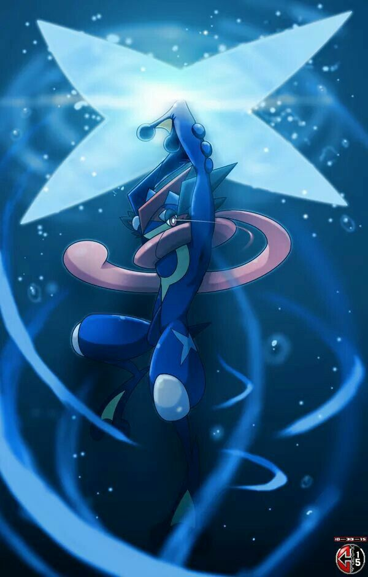

🐸 Amphinobi — Présentation
Amphinobi est un Pokémon agile et furtif, inspiré de l’univers des ninjas. Son corps élancé, sa langue enroulée comme une écharpe et ses mouvements précis lui donnent une allure unique. Maître de la vitesse, il utilise l’eau comme une arme, capable de créer des shurikens assez puissants pour trancher presque n’importe quoi.
Toujours discret mais redoutablement efficace, Amphinobi frappe vite et disparaît tout aussi rapidement. Loyal envers son dresseur, il peut même atteindre une forme spéciale — l’Amphinobi Synergie — lorsqu’il partage un lien profond avec celui-ci, augmentant encore plus sa puissance et sa détermination.
